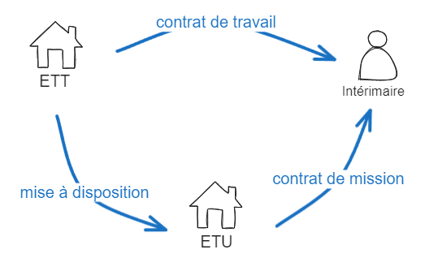

Les données source : les déclarations sociales nominatives
La DSN, Déclaration Sociale Nominative, est une déclaration envoyée tous les mois par tous les employeurs (c.à.d toutes les entités ayant des salariés, les indépendants et auto-entrepreneurs ne la remplissent donc pas). Elle contient toutes les informations relatives à la vie professionnelle des salariés : modalités du contrat de travail, heures travaillées, rémunérations, absences, etc. La DSN répond à la norme Neodes qui est mise à jour chaque année. Elle se structure en bloc puis en champ. La lecture du cahier technique de la norme Neodes est un pré-requis pour la pleine compréhension de la suite de la documentation.
On ne s’intéresse qu’aux DSN mensuelles, les DSN signal reprise travail, signal fin de contrat, signal arrêt travail, signal fin contrat unique et signal amorçage ne sont pas prises en compte.
Dans la suite de cette documentation, on définit l’objectif de la mise en qualité de la DSN et on explicite certains points de la norme Neodes qui sont particulièrement importants pour la mise en qualité de la DSN.
DSN brute vs DSN mise en qualité
La DSN brute correspond aux déclarations DSN enregistrées dans une base contenant les données telles que déclarées. A contrario, la DSN mise en qualité a fait l’objet de traitements qui rendent l’information plus synthétique et cohérente. On liste ci-dessous les différences :
DSN brute |
DSN mise en qualité |
|
|---|---|---|
Nom de la base de données |
DSNP3 |
Champollion |
Informations uniquement déclaratives |
Oui |
Non |
Chaînage mensuel des informations |
Non |
Oui |
Unicité des éléments (entreprises, établissements, salariés, contrats, etc.) |
Non |
Oui |
Prise en compte des blocs de changements d’informations |
Non |
Oui |
Allocation des salariés et contrats d’intérim vers les établissements utilisateurs |
Non |
Oui |
Suppression des données trop anciennes |
Non |
Oui |
Exemple : une salariée nommée Yolande DURAND est déclarée en CDD en janvier, en février, en mars par un établissement. En avril, elle change de nom de famille pour THOMAS, l’établissement déclare donc une Yolande THOMAS en avril et mai. Elle termine son contrat le 15 mai.
En base DSN brute, la table des salariés comportera trois lignes avec Yolande DURAND et deux lignes avec Yolande THOMAS. De plus, la table des contrats comportera 5 lignes CDD, trois au nom de DURAND et deux au nom de THOMAS. Pour finir, dans une table recensant les fins de contrats, il y aura la mention que le CDD de Mme THOMAS a fini le 15 mai.
En base DSN mise en qualité, la table des salariés ne contiendra qu’une ligne au nom de Yolande THOMAS associée un CDD terminé le 15 mai dans la table des contrats.
A noter que le terme de DSN brute est un abus de langage dans le sens où la vraie DSN brute est traitée en amont par les organismes qui la réceptionnent directement des employeurs sous format numérique non structuré.
La procédure de mise en qualité de la base Champollion lui est propre et certains choix ont été faits pour correspondre à l’usage de cette base : la mise à disposition de données nominatives précises sur les salariés et les contrats de travail.
Spécificités de la norme Neodes
Choix des données identifiantes
On appelle donnée identifiante, une information qui permet, couplée à d’autres, d’identifier de manière quasi certaine une entité telle qu’un salarié ou un contrat. La norme Neodes ne contraint pas le choix de données identifiantes, chaque utilisateur de la DSN les définit par rapport à son cas d’usage. Pour plus d’informations, se référer à la section 2.1.1 du cahier technique de la norme Neodes. Néanmoins, certaines contraintes ont été mises en place afin de faciliter l’identification des entités :
SIREN (S21.G00.06.001) et NIC de l’établissement → champs obligatoires + CME-11 (le SIREN et le NIC doivent être renseignés au répertoire SIRENE de l’INSEE) ;
NIR du salarié (S21.G00.30.001) → CSL 00 (format du NIR) + CCH-14 (unicité du NIR dans un établissement) ;
Nom de famille (S21.G00.30.002), prénoms (S21.G00.30.004) et date de naissance (S21.G00.30.006) → champs obligatoires ;
Numéro du contrat (S21.G00.40.009) → champ obligatoire + CCH-12 (unicité du numéro de contrat dans un établissement et pour un individu) ;
Date de début du contrat (S21.G00.40.001) → champ obligatoire.
A noter que le NTT, numéro technique temporaire (S21.G00.30.020), peut être utilisé comme identifiant en cas d’absence de NIR. C’est un numéro temporaire pour les individus qui n’ont pas la nationalité française. Néanmoins, ce champ est très mal rempli de la part des entreprises donc son utilisation est déconseillée.
De plus, dans la base DSNP3, les versions certifiées par la SNGI des NIR, noms de famille, prénoms et dates de naissance des salariés sont disponibles. N’ayant pas constaté une qualité de données hautement supérieure aux informations non certifiées, la base Champollion exploite les versions non certifiées afin de répertorier les états civils tels que déclarés par les établissements.
Déclaration des changements d’informations
Les changements d’information sur les salariés et les contrats sont déclarés dans les blocs S21.G00.31 et S21.G00.41. Les changements relatifs aux contrats et aux salariés sont déclarés dans les blocs dits changement de la DSN. Pour déclarer qu’un salarié S a une information I qui, à la date D, est passée de la valeur A à B, l’établissement, lors de sa prochaine déclaration, déclarera le salarié S avec I=B mais avec également un bloc changement attaché à S qui stipule que I=A jusqu’à la date D. Pour plus d’informations, se référer au cahier technique de la DSN.
On donne les deux exemples suivants pour les salariés et les contrats :
Bloc Individu |
|
|---|---|
Id Individu |
1 |
Nom |
DURAND |
Prénoms |
Yolande |
Date de naissance |
16-07-1967 |
Bloc Changement Individu |
|
|---|---|
Id Individu |
1 |
Nom |
THOMAS |
Date Modification |
2021-01-02 |
Cela signifie que jusqu’au 2 janvier 2021 la salarié de l’entreprise X, Mme Yolande DURAND née le 16/07/1967 s’appelait Mme Yolande THOMAS.
Bloc Contrat |
|
|---|---|
Id Contrat |
1 |
Numéro |
0008 |
Date de début |
2007-01-05 |
Bloc Changement Contrat |
|
|---|---|
Id Contrat |
1 |
Numéro |
erreur |
Date modification |
2021-01-02 |
Cela signifie que jusqu’au 2 janvier 2021, le contrat n°1 de l’entreprise X de numéro “0008” et de date de début 2007-01-05 avait comme numéro “erreur”.
Les déclarations de changement peuvent aussi concernées des données non identifiantes. Dans le cadre de la base Champollion, on ne les prend pas en compte. En effet, les données non identifiantes sont systématiquement écrasées par l’information la plus récente.
Il arrive aussi que certains employés conservent le même contrat mais change d’employeur, par exemple lors du rachat d’un établissement. Dans ce cas, c’est le champ S21.G00.41.012 qui permet de faire le lien avec l’ancien employeur.
Cas particulier : absence de déclarations des changements
Lorsque les établissements ne remplissent pas de bloc changement alors qu’un de leur salarié ou de leur contrat change d’informations identifiantes, le chaînage du salarié ou du contrat d’un mois sur l’autre n’est plus possible. On se retrouve donc avec deux lignes pour un même salarié ou un même contrat car ces deux lignes n’ont pas exactement les mêmes données identifiantes (ex : un salarié qui changerait de nom de famille).
Ces oublis sont malheureusement assez fréquents et on observe notamment un pic fin décembre / début janvier au moment du changement de logiciel comptable.
Cas particulier : changements de montants
Pour effectuer un correctif quant à un montant (financier ou horaire par exemple), un établissement peut déclarer un montant négatif. Par exemple, si un établissement déclare au mois M avoir versé 100 euros le 1er janvier au salarié S et qu’il se rend compte que c’est une erreur, il peut déclarer un montant versé de -100 euros le 1er janvier au salarié S sur sa déclaration du mois M+1.
Déclaration de fin de contrat
La fin d’un contrat de travail doit faire l’objet d’une déclaration spécifique au niveau du bloc S21.G00.62. Au sein des précédentes déclarations, une date de fin prévisionnelle peut être renseignée mais elle n’est pas fiable (prolongation du contrat, rupture anticipée, etc.). A noter que certains établissements oublient de déclarer la fin de leurs contrats de travail, dans ce cas, les contrats disparaissent simplement des DSN suivantes.
Déclaration des heures travaillées
Les volumes de temps de travail sont déclarés en DSN dans un bloc Activité (S21.G00.53) via les rémunérations (bloc S21.G00.51) de type 002 Salaire brut soumis à contributions d’Assurance chômage. Ils peuvent être déclarés sous différentes unités mais nous faisons l’approximation que toutes les unités peuvent être converties en heures par la suite (on considère notamment qu’un jour de travail est égal à 7 heures de travail).
Les blocs Activité permettent la déclaration de deux types d’activités (champ S21.G00.53.001) : le travail rémunéré ou l’absence non rémunérée. A noter que les congés payés sont comptabilisés dans le travail rémunéré pour la plupart des cas, à l’exception des travailleurs de la caisse du BTP dont les congés sont décomptés en durée d’absence non rémunérée.
De plus, le champ S21.G00.51.012 du bloc Rémunération permet la déclaration des heures supplémentaires si le type (S21.G00.51.011) a la valeur 017 (Heures supplémentaires ou complémentaires aléatoires) ou 018 (Heures supplémentaires structurelles)
Le champ quotité de travail du bloc Contrat (S21.G00.40.013) retranscrit quant à lui la durée contractuelle de travail applicable au salarié. Néanmoins, elle reste une valeur théorique : elle ne prend pas en compte les heures supplémentaires et les absences du salarié sur le mois considéré, elle n’est pas toujours redressée par le nombre de jours ouvrés sur le mois considéré, etc. En théorie, on devrait retrouver (modulo une conversion de tous les montants dans la même unité de mesure) :
Quotité de travail [S21.G00.40.013] = ∑ (Activité rémunérée [S21.G00.53.002 avec S21.G00.53.001 = 01] + Absence non rémunérée [S21.G00.53.002 avec S21.G00.53.001 = 02])
En réalité, ce n’est pas souvent le cas. Il faut donc manipuler le champ quotité avec prudence. Il est davantage un indicateur de la quotité relative de travail (plein temps, mi-temps, etc.) grâce à un comparaison avec le champ S21.G00.40.012 (quotité de référence pour la catégorie du salarié) qu’un indicateur du nombre d’heures réellement effectuées.
Déclaration des lieux de travail
Le champ Lieu de Travail (S21.G00.40.019) du bloc Contrat renseigne le lieu de travail effectif d’un contrat de travail : le code du chantier, le SIRET de l’établissement utilisateur, etc. Il arrive même que certaines entreprises déclarent tous leurs contrats sur leur siège social avec comme lieu de travail leurs autres établissements, même si cela n’est pas censé être déclaré comme ceci.
Cas particulier : salariés intérimaires et contrats d’intérim
Ce champ est particulièrement important dans le cas de l’intérim. En effet, les contrats d’intérim ne sont déclarés que par les établissements de travail temporaire (ETT) et non par les établissements utilisateurs (ETU).

Sur le diagramme précédent, seuls les contrats de travail (côté ETT) sont déclarés. Ainsi, le champ Lieu de Travail permet de reconstruire les contrats de missions en identifiant les ETU.
Cas particulier : CDI intérimaire
Une ETT peut conclure avec un salarié un CDI intérimaire. Ainsi, ce dernier est employé en CDI par l’ETT et est envoyé chez des ETU dans ce cadre. Pour un CDI intérimaire, il est difficile de reconstruire les contrats de mission entre l’intérimaire et les ETU. En effet, même si le champ du SIRET de l’ETU est renseigné par l’ETT, il est impossible de savoir sur quelle période l’intérimaire a travaillé pour cette ETU.
Autres
Déclarations en fractions
Les établissements peuvent déclarer leurs DSN en fractions. Pour l’exploitation de données infra-établissement (relatives aux salariés, contrats, etc.), cela n’a pas d’impact. Par contre, l’utilisation de champs agrégés au niveau des blocs Entreprise et Etablissement tels que le S21.G00.11.008 (effectif de fin de période déclarée de l’établissement) doit fait l’objet d’une étude plus attentive (ex : est-ce qu’il faut sommer les valeurs des différentes fractions ou non ?).
Gestion des déclarations de type annule et remplace
Les déclarations de type annule et remplace (S20.G00.05.002 = 03 ou 05) sont gérées par les organismes réceptionnant la DSN. Ce sont en fait des déclarations qui annulent et remplacent de précédentes déclarations effectuées au sein du même mois donc les organismes gèrent la substitution.
Informations satellite
Les informations satellite permette de contextualiser les données DSN.
Données de référence de la norme Neodes
Les tables de référence de la norme Neodes permettent de faire le lien entre les codes utilisés dans les déclarations et les libellés correspondants. Au sein de la base Champollion, on sauvegarde :
les libellés NAF ;
les libellés de conventions collectives
les libellés des natures de contrat (issus de la norme Neodes)
les libellés des motifs de recours (issus de la norme Neodes)
les codes des catégories juridiques de la nomenclature INSEE (issus d’un fichier INSEE)
Données de zonage
Le zonage des SIRET permet de connaître l’unité de contrôle de chaque établissement. Pour récupérer cette information, on se branche sur un export de fichier effectué tous les 3 mois par le bureau Travail de la SDPSN à partir de SI Zonage et SUIT. Ce fichier recense tous les couples SIRET / UC à l’échelle nationale. Les personnes à contacter pour bénéficier de cet export sont TRVJM et EXTZJ.